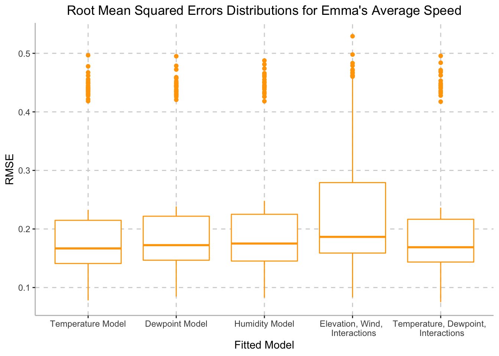

library(tidyverse)
library(FITfileR)
library(dplyr)
library(patchwork)
library(leaflet)
library(modelr)
training_raw <- read_csv("activities/activities.csv") %>%
janitor::clean_names()
training_summary =
training_raw %>%
filter(activity_type == "Run") %>%
select(activity_id, activity_date, activity_name, activity_description, elapsed_time_6, distance_7, max_heart_rate_8, relative_effort_9, max_speed, average_speed, elevation_gain, elevation_loss, max_grade, average_grade, max_cadence, average_cadence, average_heart_rate, calories, weather_temperature, dewpoint, humidity, wind_speed) %>%
filter(activity_id >= 6910869137) %>%
separate(activity_date, c("month_date", "year", "time"), sep = ", ") %>%
mutate(
date = str_c(month_date, year, sep = " "),
date = as.Date(date, format = "%b%d%Y")
) %>%
select(-month_date, -year) %>%
mutate(
elapsed_time_min = elapsed_time_6 / 60,
distance_km = distance_7,
max_heart_rate = max_heart_rate_8,
relative_effort = relative_effort_9
) %>%
select(-elapsed_time_6, -distance_7, -max_heart_rate_8, -relative_effort_9)
activity_summaries =
training_summary %>%
select(activity_id, date, time, activity_name, activity_description)
tidy_training =
training_summary %>%
select(-activity_name, -activity_description) %>%
select(activity_id, date, time, distance_km, elapsed_time_min, max_speed, average_speed, max_heart_rate, average_heart_rate, relative_effort, everything()) %>%
filter(date != "2022-03-31",
date != "2022-04-03")Based on Emma’s recount of personal experience, she perceives environmental factors to be significant predictors of her performance. More specifically, weather conditions such as temperature, humidity, dewpoint, and windspeed affect Emma’s perceived running experience. Additionally, due to the irregular environmental conditions on race day, we generated several models to investigate which environmental factors would be best predictors for Emma’s performance. We hypothesize that Emma’s average speed is dependent on temperature. To test this hypothesis, we built the following models:
fit1 = lm(average_speed ~ weather_temperature, data = tidy_training)
fit2 = lm(average_speed ~ dewpoint, data = tidy_training)
fit3 = lm(average_speed ~ humidity, data = tidy_training)
fit4 = lm(average_speed ~ (elevation_gain + wind_speed)^3, data = tidy_training)
fit5 = lm(average_speed ~ (weather_temperature + dewpoint)^3, data = tidy_training)We can now perform a comparison between the five models in terms of
cross-validated prediction error. To do this, we first create a
cross-validation data frame cv_df. Contained within
cv_df is 2 side-by-side list columns with the testing and
training data split pairs, with a corresponding ID number for each pair.
Since we are able to apply resample objects directly into
lm functions, we can skip the extra step of converting the
testing and training data into tibbles. Next, we apply the
map function to map each regression model to the training
data. Finally, we can compute the root mean squared errors (RMSEs) for
each model by applying the map2_dbl function to the testing
data.
cv_df =
crossv_mc(tidy_training, 100)
cv_df = cv_df %>%
mutate(
mod1 = map(.x = train, ~lm(average_speed ~ weather_temperature, data = .x)),
mod2 = map(.x = train, ~lm(average_speed ~ dewpoint, data = .x)),
mod3 = map(.x = train, ~lm(average_speed ~ humidity, data = .x)),
mod4 = map(.x = train, ~lm(average_speed ~ (elevation_gain + wind_speed)^3, data = .x)),
mod5 = map(.x = train, ~lm(average_speed ~ (weather_temperature + dewpoint)^3, data = .x))) %>%
mutate(
rmse_mod1 = map2_dbl(.x = mod1, .y = test, ~rmse(model = .x, data = .y)),
rmse_mod2 = map2_dbl(.x = mod2, .y = test, ~rmse(model = .x, data = .y)),
rmse_mod3 = map2_dbl(.x = mod3, .y = test, ~rmse(model = .x, data = .y)),
rmse_mod4 = map2_dbl(.x = mod4, .y = test, ~rmse(model = .x, data = .y)),
rmse_mod5 = map2_dbl(.x = mod5, .y = test, ~rmse(model = .x, data = .y)))
cv_df %>%
select(starts_with("rmse")) %>%
pivot_longer(
everything(),
names_to = "model",
values_to = "rmse",
names_prefix = "rmse_") %>%
ggplot(aes(x = model, y = rmse, color = c("#FFA500"))) +
geom_boxplot(color = c("#FFA500")) +
labs(
title = "Root Mean Squared Errors Distributions for Emma's Average Speed",
x = "Fitted Model",
y = "RMSE") +
theme(axis.line = element_line(color = "grey"),
panel.background = element_blank(),
legend.position = "none",
panel.grid.major = element_line(color = "light grey", linetype = "dashed"),
plot.title = element_text(hjust = 0.5)) +
scale_x_discrete(labels = c("mod1" = "Temperature Model",
"mod2" = "Dewpoint Model",
"mod3" = "Humidity Model",
"mod4" = "Elevation, Wind, \n Interactions",
"mod5" = "Temperature, Dewpoint, \n Interactions"))
summary(fit1) ##
## Call:
## lm(formula = average_speed ~ weather_temperature, data = tidy_training)
##
## Residuals:
## Min 1Q Median 3Q Max
## -1.67575 -0.04426 0.02527 0.08812 0.52378
##
## Coefficients:
## Estimate Std. Error t value Pr(>|t|)
## (Intercept) 2.828694 0.098756 28.643 <2e-16 ***
## weather_temperature 0.010893 0.004964 2.194 0.031 *
## ---
## Signif. codes: 0 '***' 0.001 '**' 0.01 '*' 0.05 '.' 0.1 ' ' 1
##
## Residual standard error: 0.2448 on 83 degrees of freedom
## (23 observations deleted due to missingness)
## Multiple R-squared: 0.05483, Adjusted R-squared: 0.04344
## F-statistic: 4.815 on 1 and 83 DF, p-value: 0.03101Based on the distributions depicted above, we can conclude that the model with temperature is able to generate better predictions than the other models with environmental factors. The p-value for this model is 0.03101. As it is below the significance level of 0.05, we can conclude that this model is a good predictor for average speed.